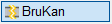
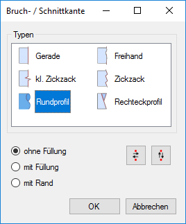
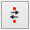

")
")

Alternativer Aufruf: mittlere Maustaste auf ein Bruch- oder Schnittkanten-Element.
Bruch- oder Schnittkante zwischen zwei beliebigen Elementpunkten zeichnen, z. B. für die Darstellung von Rund- oder Rechteckprofilen oder unterbrochenen Bauteil-Darstellungen. Der Kantentyp kann nach Auswahl der Elementpunkte gewählt werden. Die gewählten Optionen werden in der Zeichnung sofort als Vorschau angezeigt.
So wird's gemacht:
§Klicken Sie nacheinander die Punkte an, zwischen denen eine Bruch- oder Schnittkante gezeichnet werden soll. [1.Punkt]; [2.Punkt].
Die Verbindung zwischen den gewählten Elementpunkten wird als gerade Linie angezeigt.
§Wählen Sie im Dialog Bruch- / Schnittkanten den gewünschten Kantentyp (Typen) und die Art der Darstellung:
Die Bruch-/Schnittkante wird in der Zeichnung sofort als Vorschau dargestellt.
§Klicken Sie auf OK.
Die Darstellung der Bruch-/Schnittkante wird in der Zeichnung übernommen. Sie können sofort eine weitere Bruch- oder Schnittkante zeichnen.
Optionen im Dialog "Bruch- / Schnittkante"
 |
Typen
Auswahl der gewünschten Bruch- oder Schnittkante.
Optionen (abhängig vom gewählten Typ)
mit Überstand
Zeichnet die Kante so, dass sie an den Schnittpunkten übersteht.
Füllungen
Nur bei Rundprofilen und Rechteckprofilen: Hervorhebung der Schnitt- oder Bruchflächen.
ohne Füllung |
Die Schnitt-/Bruchfläche wird nur mit einer Linie umrandet. |
mit Füllung |
Der sichtbare Teil einer Schnitt-/Bruchfläche wird gefüllt dargestellt, z. B. für Vollprofile. Die Füllfarbe können Sie im Funktionsbereich einstellen. |
mit Rand |
Der sichtbare Rand einer Schnitt-/Bruchfläche wird mit einer breiten Linie umrandet, z. B. für Hohlprofile. Die Linie entspricht einer Füllung. |
|
Tipp: |
|
Die Füllfarbe einzelner Füllungen können Sie mit [Konst1 | Schraf | ändere] ändern. Bei mehreren Füllungen bieten sich die Funktionen [Konst1 | Schraf | AttÄnd] oder [Konst1 | FenÄnd | StLiKr] an. |

(Ausrichtung)
 |
Spiegelt die Bruch-/Schnittkante um die Längs- bzw. Querachse. |
Siehe auch:
Zugehörige Referenzen: